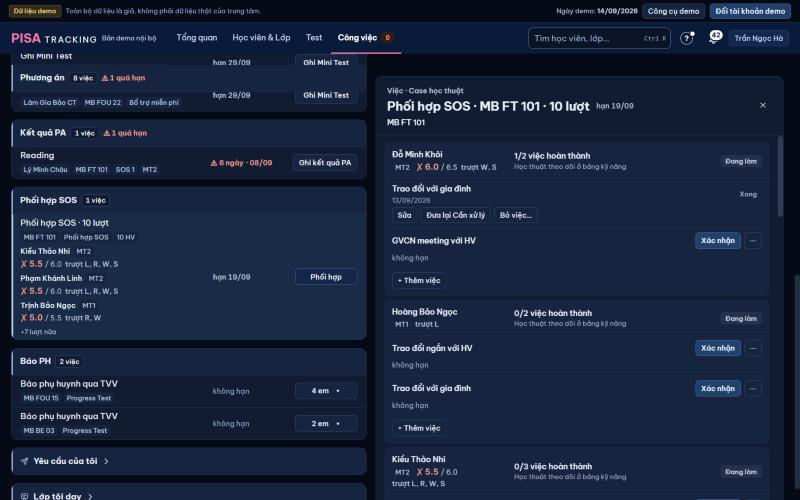
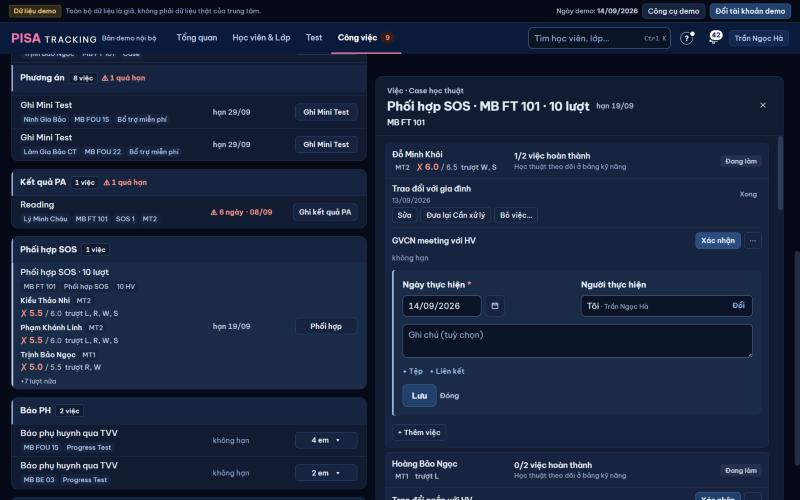
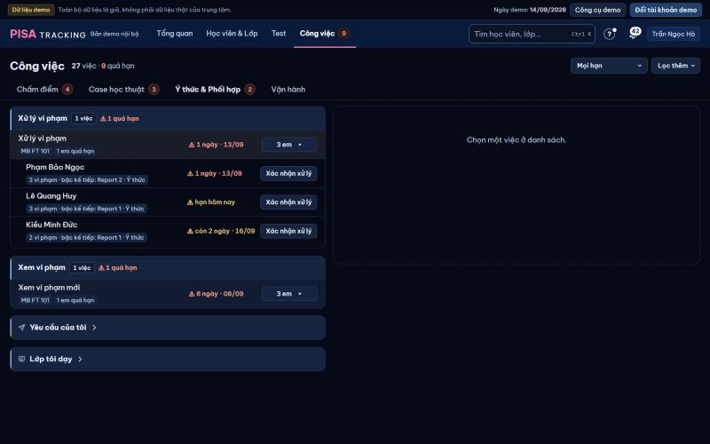
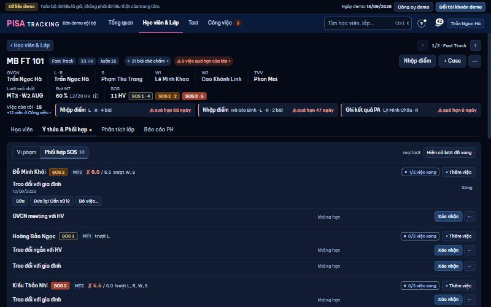
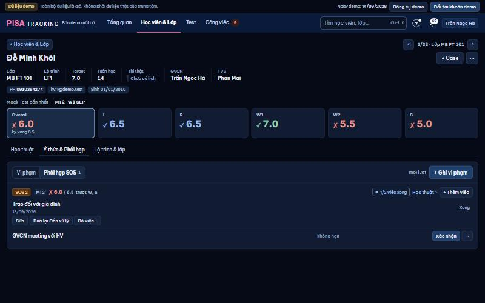

Hôm nay thứ Tư 11/11 · W2 NOV. GVCN Nguyễn Hoàng Dũng (CP FT 116, CP FT 131), TVV Lê Thu. Cùng thế giới hình ảnh với Ý thức V2 (#1316). Ảnh web hiện tại: cuối trang · ý chủ SP → chỗ, Turso, [XM]: README.md · thao tác TRƯỚC → SAU: khop-khac.md.
Luật (chủ SP 11/11, qua PTA): mọi việc Phối hợp SOS là của GVCN; QL thấy và bấm thẳng như GVCN (không nút "làm thay"). Riêng Meeting CX/GĐCN (sau Mock): GVCN xác nhận → sinh việc cho TVV của em báo gia đình, sắp xếp buổi họp, báo lại kết quả — như Báo PH Ý thức (hạn 5 ngày, em không có TVV → QL).
1Phối hợp SOS chuyển từ tab Case học thuật sang "Ý thức & Phối hợp"; tab có hai mục Vi phạm · Phối hợp SOS — tên mục khác tên dòng, hết lặp "Phối hợp SOS" ba lần · 2mỗi dòng = một việc thật ở một lớp ("GVCN meeting với HV · 4 em"), thay dòng "Phối hợp SOS · 10 lượt" · 3mỗi trường một kiểu: tên việc 15 đậm · số em 13 mờ (không ghi khi 1 em) · lớp chữ mờ không khung · tên em chip tròn viền mảnh, ≤ 2 + "+n" · hạn cột riêng · một nút động từ · 4không điểm / kỹ năng trượt trong ô; mọi ô cao đều 64 px (cả Vi phạm) · 5bấm chip tên em = mở panel, con trỏ ở dòng em đó · 6panel: ① Học viên cần làm → ② Đã làm → ③ Kết quả, Xác nhận mở form tại dòng: Ngày + MỘT ô Nội dung.
| 1Học viên cần làm | 2Đã làm | 3Kết quả | |
|---|---|---|---|
| Kiều Thảo NhiSOS 3MT4 · ✗ 5.0 / 6.5 · trượt L, R, W, S | Ngày *
Người làm Tôi
| ||
| Đặng Minh KhôiSOS 2MT4 · ✗ 5.5 / 6.5 · trượt W, S | |||
| Lý Thanh TâmSOS 2MT4 · ✗ 5.5 / 6.5 · trượt R, W | |||
| Ngô Bảo ChâuSOS 2MT4 · ✗ 6.0 / 6.5 · trượt S | |||
| Đã làm1 | |||
| Phạm Khánh LinhSOS 3MT4 · ✗ 5.0 / 6.5 · trượt L, R, W | 10/11Nguyễn Hoàng Dũng | Em nói tuần trước ốm 3 buổi nên hổng phần Reading. Hẹn học bù 2 buổi với Tutor, tuần sau cô kiểm tra lại bài đọc. |
|
1hạn từng em dưới tên (quá hạn đỏ ⚠ + ngày; ≤ 3 ngày vàng) — dòng quá hạn lên đầu · 2Xác nhận Meeting CX: Ngày + Nội dung gửi TVV (tuỳ chọn); ngay dưới nút Lưu nói hậu quả: "Lưu xong: việc cho TVV Lê Thu, hạn 5 ngày" · 3vừa Lưu: dòng ở lại, nền xanh nhạt, ② "✓ 11/11 · Bạn · Hoàn tác 8 s" (Hoàn tác = gỡ cả việc TVV vừa sinh), ③ "Chờ TVV Lê Thu · hạn 16/11" · em chưa có TVV: ③ "Chưa có TVV — GVCN báo" + nút Ghi kết quả cho GVCN (Đinh Quốc Huy) · 4③ khi TVV đã báo: ngày + Nội dung TVV ghi (PH nói gì, họp ngày nào) — GVCN, GV đọc tại chỗ · 5⋯ chỉ việc ít dùng: Sửa hạn… (N34) · Bỏ việc…; đã làm: Đưa lại Cần xử lý · Bỏ việc… ("Sửa" bấm thẳng ở ②).
| 1Học viên cần làm | 2GVCN xác nhận | 3Kết quả · TVV báo | |
|---|---|---|---|
| Phạm Khánh LinhSOS 3MT4 · ✗ 5.0 / 6.5 · trượt L, R, W2 ngày · 09/11 | |||
| Đã làm3 | |||
| Đinh Quốc HuySOS 3MT4 · ✗ 5.0 / 6.5 · trượt L, R, W | 10/11Nguyễn Hoàng Dũng | Chưa có TVV — GVCN báohạn 15/11 | |
| Kiều Thảo NhiSOS 3MT4 · ✗ 5.0 / 6.5 · trượt L, R, W, S | 11/11 · BạnĐã lưu · 8 s | Chờ TVV Lê Thuhạn 16/11 | |
| Hoàng Bảo NgọcSOS 3MT4 · ✗ 5.0 / 6.5 · trượt L, W, S | 05/11Nguyễn Hoàng Dũng | TVV đã báo · 08/11 Gọi mẹ em, hẹn họp 07/11 với cô Hằng (GĐCN). Mẹ đồng ý cho em học thêm 2 buổi Writing / tuần, sau MT5 họp lại. |
|
| Phạm Khánh LinhSOS 3MT4 · ✗ 5.0 / 6.52 ngày · 09/11 | Ngày *
Người làm Tôi
Lưu xong: việc cho TVV Lê Thu báo gia đình, sắp xếp họp, hạn 5 ngày.
|
1TVV thấy việc ở tab Báo PH, mục Phối hợp SOS (cạnh "Báo PH sau vi phạm") — cùng ô việc K1 · 2panel: ① em cần báo → ② GVCN đã xác nhận (ngày + nội dung GVCN gửi) → ③ TVV báo PH & kết quả · 3form giống Báo PH Ý thức: Kết quả (Đã báo PH · Chưa liên hệ được) · Ngày · Nội dung * (≥ 10 ký tự — luật Meeting CX cũ chuyển sang bước TVV); "Chưa liên hệ được" giữ việc mở, đếm lần · 4số PH hiện ngay ở dòng đang mở (không phải mở hồ sơ).
| 1Học viên cần báo | 2GVCN xác nhận | 3Bạn báo PH · kết quả | |
|---|---|---|---|
| Kiều Thảo NhiSOS 3MT4 · ✗ 5.0 / 6.5hạn 16/11 | 11/11Nguyễn Hoàng Dũng Mời bố mẹ họp với cô Hằng (GĐCN) tuần này, em trượt 3 kỹ năng MT4. |
PH Kiều Văn Nam (bố)
Kết quả
Ngày *
| |
| Lý Gia HânSOS 3MT4 · ✗ 5.5 / 6.5còn 2 ngày · 13/11 | 08/11Nguyễn Hoàng Dũng | Chưa liên hệ được · lần 110/11 · gọi mẹ 2 lần không nghe máy | |
| Đã báo1 | |||
| Hoàng Bảo NgọcSOS 3MT4 · ✗ 5.0 / 6.5 | 05/11Nguyễn Hoàng Dũng | Đã báo PH · 08/11 Gọi mẹ em, hẹn họp 07/11 với cô Hằng (GĐCN). Mẹ đồng ý cho em học thêm 2 buổi Writing / tuần, sau MT5 họp lại. |
|
1ô 375: tên việc + số em / lớp + chip (1 + "+n") / hạn — mọi ô cùng ba tầng, cả ô là nút, "›" bên phải · 2panel 375: mỗi em một thẻ, đọc dọc ① tên · hạn → ② nút Xác nhận (rộng hết, 44 px) hoặc "✓ ngày" → ③ Nội dung · 3form mở ngay trong thẻ, ô ngày 44 px, nút Lưu dính chân.
Em ốm 3 buổi nên hổng phần Reading. Hẹn học bù 2 buổi với Tutor, tuần sau kiểm tra lại.
Mời bố mẹ họp với cô Hằng (GĐCN) tuần này.
1một em = một khối (ô Học viên gộp: tên · SOS · một dòng điểm chữ phụ · "x/y xong" · + Thêm việc); một việc = một dòng · 2đọc trái → phải: ① Việc (tên + hạn) → ② Đã làm (nút Xác nhận ở chính chỗ ngày sẽ hiện) → ③ Kết quả (Nội dung GVCN ghi; Meeting CX: TVV báo gì) · 3kết quả hiện ngay (web cũ chỉ có ngày) — 2 dòng, "Xem đủ ▾" mở tại chỗ · 4việc đã xác nhận trước PR (không có Nội dung): "Chưa ghi kết quả · Ghi" — không chặn, không tính là chưa xong · 5bỏ: "Học thuật theo dõi ở bảng kỹ năng", "Đang làm", hàng ba nút "Sửa · Đưa lại Cần xử lý · Bỏ việc…" (→ "Sửa" + ⋯).
| Học viên | 1Việc | 2Đã làm | 3Kết quả | |
|---|---|---|---|---|
| Meeting CX/GĐCN (sau Mock)2 ngày · 09/11 | ||||
| GVCN meeting với HVkhông hạn | 10/11Nguyễn Hoàng Dũng | Em ốm 3 buổi nên hổng phần Reading. Hẹn học bù 2 buổi với Tutor, tuần sau cô kiểm tra lại bài đọc. | ||
| Trao đổi với gia đìnhkhông hạn | 09/11Nguyễn Hoàng Dũng | Gọi mẹ em: em ốm tuần trước, đã khoẻ. Mẹ nhắc em làm bù bài Reading, nhờ cô báo nếu còn thiếu. | ||
| Meeting CX/GĐCN (sau Mock)hạn 13/11 | 11/11 · BạnĐã lưu · | Chờ TVV Lê Thuhạn 16/11 | ||
| GVCN meeting với HVkhông hạn | 11/11Nguyễn Hoàng Dũng | Em ít luyện Listening ở nhà. Thống nhất mỗi tối 30 phút nghe, thứ Sáu nộp nhật ký cho cô. | ||
| Trao đổi với gia đìnhkhông hạn | ||||
| GVCN meeting với HVkhông hạn | ||||
| Trao đổi với gia đìnhkhông hạn | 06/11Nguyễn Hoàng Dũng | Chưa ghi kết quả · | ||
| Trao đổi ngắn với HVkhông hạn | ||||
| Trao đổi với gia đìnhkhông hạn |
1người không có việc: ② "Chờ GVCN" thay nút, không ⋯, không + Thêm việc — đọc đủ ③ Kết quả (máy chủ đã cho GV lớp xem) · 2TVV ở hồ sơ lớp: Meeting CX "Chờ bạn báo PH" + nút Ghi kết quả tại ③ (cùng việc ở Công việc) · 3375: thẻ em, mỗi việc một khối ①②③ dọc.
| Học viên | 1Việc | 2Đã làm | 3Kết quả |
|---|---|---|---|
| GVCN meeting với HVkhông hạn | Chờ GVCN | ||
| Trao đổi với gia đìnhkhông hạn | 10/11Nguyễn Hoàng Dũng | Gọi mẹ em: em thiếu 2 bài Writing, ở nhà ít luyện nói. Mẹ hứa nhắc em làm đủ bài, cuối tuần sau cô gọi lại. | |
| Meeting CX/GĐCN (sau Mock) | 05/11Nguyễn Hoàng Dũng | TVV Lê Thu báo · 08/11 Gọi mẹ em, hẹn họp 07/11 với cô Hằng (GĐCN). Mẹ đồng ý cho em học thêm 2 buổi Writing / tuần, sau MT5 họp lại. |
Em ốm 3 buổi nên hổng phần Reading. Hẹn học bù 2 buổi với Tutor.
Gọi mẹ em: em ốm tuần trước, đã khoẻ. Mẹ nhắc em làm bù bài Reading.
1ô Lượt gộp: "MT4 · SOS 3" · một dòng điểm · x/y xong · + Thêm việc · Học thuật › — các cột ①②③ giống hệt hồ sơ lớp · 2lượt đã xong gập thành một dòng ("MT3 · SOS 2 · 2/2 xong · Xem việc ▸"), mở tại chỗ · 3mới nhất trước.
| Lượt | 1Việc | 2Đã làm | 3Kết quả | |
|---|---|---|---|---|
MT4SOS 3✗ 5.0 / 6.5 · trượt L, R, W, S2/3 xong |
Meeting CX/GĐCN (sau Mock)hạn 13/11 | 11/11Nguyễn Hoàng Dũng | Chờ TVV Lê Thuhạn 16/11 Gửi TVV: mời bố mẹ họp với cô Hằng (GĐCN) tuần này. | |
| GVCN meeting với HVkhông hạn | 11/11Nguyễn Hoàng Dũng | Em ít luyện Listening ở nhà. Thống nhất mỗi tối 30 phút nghe, thứ Sáu nộp nhật ký cho cô. | ||
| Trao đổi với gia đìnhkhông hạn | ||||
MT3SOS 2✗ 5.5 / 6.0 · trượt R, W |
2/2 xong | |||
Em ít luyện Listening ở nhà. Mỗi tối 30 phút nghe, thứ Sáu nộp nhật ký.





| Thao tác | Trước (web 11/11) | Sau (V2) | |
|---|---|---|---|
| Thấy việc Phối hợp SOS (GVCN) | tab Case học thuật, MỘT dòng mỗi lớp "Phối hợp SOS · n lượt" + thẻ điểm 3 em | tab Ý thức & Phối hợp, mục Phối hợp SOS, MỘT dòng mỗi việc × lớp, chip tên em, không điểm | ĐỔI |
| Thấy việc (TVV) | không có | Meeting CX sau khi GVCN xác nhận: tab Báo PH, mục Phối hợp SOS | MỚI |
| QL làm việc của GVCN | được (cùng nút) | được, cùng nút, không chữ "làm thay" | GIỮ |
| Xác nhận đã làm | Xác nhận → form: Ngày · Người · Ghi chú (tuỳ chọn) · Tệp · Lưu | Xác nhận tại dòng: Ngày · Người (Tôi · Đổi) · Nội dung · + Tệp · Lưu; Hoàn tác 10 s | ĐỔI |
| Meeting CX: ghi chú ≥ 10 ký tự | GVCN | chuyển sang Nội dung TVV ghi (bước báo PH); GVCN gửi nội dung tuỳ chọn | ĐỔI |
| Đọc kết quả | không hiện (chỉ ngày + người) | ③ Kết quả mọi nơi, 2 dòng + Xem đủ | MỚI |
| Sửa việc đã xong | nút "Sửa" | "Sửa" ở ô ② | GIỮ |
| Đưa lại Cần xử lý | nút riêng | ⋯ › Đưa lại Cần xử lý (+ Hoàn tác 10 s ngay sau Lưu) | CHỖ |
| Bỏ việc… / Khôi phục | ⋯ / nút | ⋯ › Bỏ việc… (Hoàn tác) · việc đã bỏ: Khôi phục trong ⋯ | GIỮ |
| Sửa hạn Meeting CX (N34) | ô hạn ở dòng | ⋯ › Sửa hạn… (hạn vẫn hiện ở ①) | CHỖ |
| + Thêm việc | đầu thẻ em | ô Học viên / Lượt | GIỮ |
| Tệp đính kèm | trong form | + Tệp trong form tại dòng | GIỮ |
| Nội dung Báo PH qua TVV (lớp thường, 4 nội dung) | details dưới tên việc | giữ, dưới tên việc ở ① | GIỮ |
| Hiện cả lượt đã xong · mọi lượt · Học thuật › | có | có (cùng chỗ) | GIỮ |
| Mở hồ sơ em / lớp | tên = link | tên = link; chip tên ở ô việc = mở panel đúng em | GIỮ |
| Ý thức: khay "n em ▾" | nút "3 em ▾" | nút động từ "Xử lý ▾" (số em đã ở dòng 1), chip "+n" cũng mở khay | CHỮ |
| Bỏ chữ thừa | "Học thuật theo dõi ở bảng kỹ năng", "Đang làm", "1 em quá hạn", "Ý thức" trong chip | bỏ | BỎ |